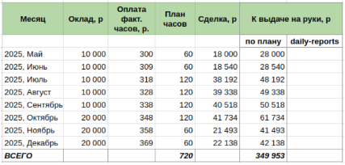

4. टीम-कार्य की नियमावली › टीम के नियम › संक्षिप्त रूप
हमारे उद्यम के साथ सहयोग की शुरुआत में तीन चरण होते हैं:
परिचय अवधि 2 से 3 सप्ताह की होती है — इस पर निर्भर करते हुए कि आप कितना समय दे सकते हैं और आपके पास कितना अनुभव है।
आपका लक्ष्य है काम के विषय और अपनी विशेषज्ञता से परिचित होना और स्वयं से पूछना: पसंद है या नहीं, यह मेरा क्षेत्र है या नहीं?
इस अवधि में प्लांट का भी एक लक्ष्य होता है: समझना कि क्या हमारे बीच दीर्घकालिक, पारस्परिक रूप से लाभकारी सहयोग बनेगा।
परिचय अवधि का भुगतान पैसे में नहीं होता, बल्कि उस अनुभवी इंजीनियर के समय से होता है जो आपके साथ रहेगा।
परिचय अवधि में हर व्यक्ति उत्पादन से परिचय के लिए कुछ छोटे कार्य करेगा। उनके परिणाम अगले चरण — इंटर्नशिप — पर हमारे संयुक्त निर्णय का आधार बनेंगे।
इंटर्नशिप की दो विशेषताएँ हैं: वृत्ति और कार्यों का स्वरूप।
वृत्ति में एक स्थिर भाग (मूल) और एक परिवर्ती भाग होता है। इसकी राशि आपके प्रवेश-स्तर (जूनियर, मिडल के निकट, या सीनियर) और स्वाभाविक रूप से उस दर पर निर्भर करती है जिससे आप शुरू करते हैं।
कार्यों का स्वरूप इंटर्नशिप में उन कार्यों के निकट होता है जो प्लांट के ग्राहक हमें देते हैं।
इस दूसरे चरण का लक्ष्य है मेंटर की न्यूनतम भागीदारी के साथ कुछ वास्तविक उत्पादन-कार्य पूरे करना।
प्लांट का भी लक्ष्य है: तय करना कि कितने समय बाद आपको रोज़गार अनुबंध पर आमंत्रित किया जा सकता है।
इंटर्नशिप 3–6 महीने से एक वर्ष तक चलती है और मुख्यतः आपकी इच्छा और भागीदारी पर निर्भर करती है।
पूर्णकालिक छात्र के लिए वृत्ति की राशि का उदाहरण:

नियुक्ति इंटर्नशिप से केवल अनुबंध के रूप में भिन्न होती है (प्रशिक्षु अनुबंध की जगह रोज़गार अनुबंध)।
नियुक्ति के समय तक वेतन-स्तर आपके पद (मिडल, जूनियर या सीनियर) के अनुरूप होना चाहिए।